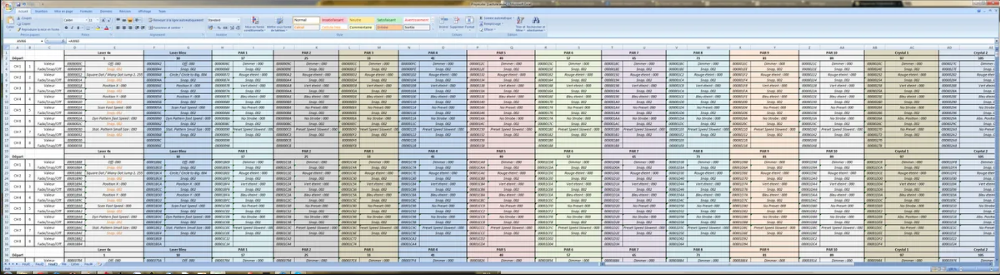
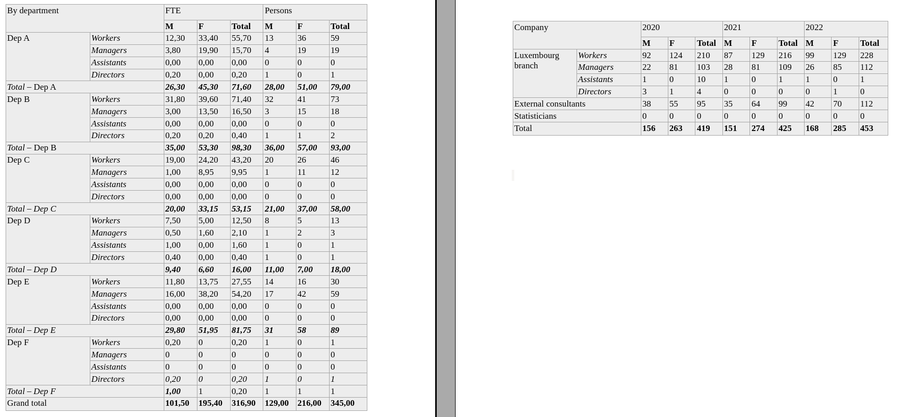

Automating checks of handcrafted Word tables with {docxtractr}

Unfortunately not everyone knows about literate programming so many tables in Word documents are “generated” by hand (generated is really too strong a word) and what very often happens is that these handcrafted tables have typos. Usually it’s totals that are wrong. Checking the totals in these tables by hand with a pocket calculator is a tedious, long and boring job.
So as my job’s statistician but also kinda automation dude that types all day in a weird black box, I’ve been asked if it were possible to automate these checks on tables in a Word document. And of course, the answer is yes, because whatever you need to get done, there’s an R package for that!
There are, to my knowledge, 2 packages that we can use to get tables from a Word document into R (an activity that I will now refer to as office-scraping).
These packages are {officer} and {docxtractr}. For his particular task I’ve used {docxtractr}. The reason is that {docxtractr} returns the table “as-is”, while {officer} returns a tibble where each cell of the table gets a row in the tibble. {officer}’s representation of the scraped tables might be useful in some cases, but in this particular case, {docxtractr}’s approach was exactly what I needed.
First of all, we need a Word document with some tables.Here’s one I’ve prepared that contains two tables that look close to the ones I had to deal with. In the actual document, there were hundreds of such tables. Here’s a picture of the tables in case you can’t open the document:

The first table is divided by departments of the company, and each section of the table has its own sub-total. As stated in the beginning, the goal is to check for typos by recomputing the sub-totals and totals and then comparing the original tables with the ones where the totals were recomputed.
The problem we will face with each table are the merged cells; if there were no merged cells, scraping them with {docxtractr} would be trivially simple, but because of these merged cells, we will have to write quite a lot of code to get them in a format that we can actually use.
Extracting the tables using {docxtractr}
{docxtractr} has a very handy function that gets all the tables from a Word document and puts them into a list (it’s also possible to extract other stuff like comments). Let’s start by loading {dplyr} (for the rest of the functions, I’ll use the package::function() notation to make it clear where the functions come from):
library(dplyr)
Let’s now read the document using {docxtractr}:
doc_raw <- docxtractr::read_docx("report.docx")And let’s get all the tables:
list_tables <- docxtractr::docx_extract_all_tbls(doc_raw)Let’s now take a look at the second element of the list, which corresponds to the second table (I’m starting with the second table because it’s the smallest of the two):
table_1 <- list_tables[[1]] %>%
janitor::clean_names()
table_2 <- list_tables[[2]] %>%
janitor::clean_names()
table_2## # A tibble: 8 × 11
## company x2020 x2021 x2022 na na_2 na_3 na_4 na_5 na_6 na_7
## <chr> <chr> <chr> <chr> <chr> <chr> <chr> <chr> <chr> <chr> <chr>
## 1 "" M F Total M F Total M F Total <NA>
## 2 "Luxembourg branc… Work… 92 124 210 87 129 216 99 129 228
## 3 "" Mana… 22 81 103 28 81 109 26 85 112
## 4 "" Assi… 1 0 10 1 0 1 1 0 1
## 5 "" Dire… 3 1 4 0 0 0 0 1 0
## 6 "External consult… 38 55 95 35 64 99 42 70 112 <NA>
## 7 "Statisticians" 0 0 0 0 0 0 0 0 0 <NA>
## 8 "Total" 156 263 419 151 274 425 168 285 453 <NA>
As you can see, because of the merged cells, the rows are not all aligned with the columns. So we need to split the table, and treat the two parts separately. I’m starting with the part of the table where the rows are correctly aligned with the columns. This is just a matter of renaming some columns, and converting the numbers (that are represented as characters) into numerics:
table_2_1 <- table_2 %>%
select(-company) %>%
filter(!is.na(na_7)) %>%
purrr::set_names(
c("worker_type",
"m_2020",
"f_2020",
"t_2020",
"m_2021",
"f_2021",
"t_2021",
"m_2022",
"f_2022",
"t_2022"
)
) %>%
mutate(across(!starts_with("worker"),
as.numeric))
table_2_1## # A tibble: 4 × 10
## worker_type m_2020 f_2020 t_2020 m_2021 f_2021 t_2021 m_2022 f_2022 t_2022
## <chr> <dbl> <dbl> <dbl> <dbl> <dbl> <dbl> <dbl> <dbl> <dbl>
## 1 Workers 92 124 210 87 129 216 99 129 228
## 2 Managers 22 81 103 28 81 109 26 85 112
## 3 Assistants 1 0 10 1 0 1 1 0 1
## 4 Directors 3 1 4 0 0 0 0 1 0
Let’s now deal with the second part of the table. This is the part of the table where the rows were not aligned with the columns, due to the merged cells. The operations are essentially the same as before, the difference is that we need to remove a different column (here we remove na_7, before it was company):
table_2_2 <- table_2 %>%
filter(is.na(na_7)) %>%
select(-na_7) %>%
rename(worker_type = company) %>%
filter(worker_type != "") %>%
purrr::set_names(
c("worker_type",
"m_2020",
"f_2020",
"t_2020",
"m_2021",
"f_2021",
"t_2021",
"m_2022",
"f_2022",
"t_2022"
)
) %>%
mutate(across(!starts_with("worker"),
as.numeric))
table_2_2## # A tibble: 3 × 10
## worker_type m_2020 f_2020 t_2020 m_2021 f_2021 t_2021 m_2022 f_2022 t_2022
## <chr> <dbl> <dbl> <dbl> <dbl> <dbl> <dbl> <dbl> <dbl> <dbl>
## 1 External consu… 38 55 95 35 64 99 42 70 112
## 2 Statisticians 0 0 0 0 0 0 0 0 0
## 3 Total 156 263 419 151 274 425 168 285 453I didn’t comment the operations, but if you’re following along, take some time to see what each line does.
Now we can bind the rows and we end up with the table from the Word document as a flat and easy to manipulate data frame:
table_2_clean <- bind_rows(
table_2_1,
table_2_2
)
table_2_clean## # A tibble: 7 × 10
## worker_type m_2020 f_2020 t_2020 m_2021 f_2021 t_2021 m_2022 f_2022 t_2022
## <chr> <dbl> <dbl> <dbl> <dbl> <dbl> <dbl> <dbl> <dbl> <dbl>
## 1 Workers 92 124 210 87 129 216 99 129 228
## 2 Managers 22 81 103 28 81 109 26 85 112
## 3 Assistants 1 0 10 1 0 1 1 0 1
## 4 Directors 3 1 4 0 0 0 0 1 0
## 5 External consu… 38 55 95 35 64 99 42 70 112
## 6 Statisticians 0 0 0 0 0 0 0 0 0
## 7 Total 156 263 419 151 274 425 168 285 453All of this because of these merged cells! This may seem like a lot of work, but imagine that you need to check 50 such tables. You could put all the previous operations into a function and then simply apply that function over all the tables (which is exactly what I did at my job). So you end up with 50 cleaned tables in a matter of seconds. Now let’s not forget our original objective, we wanted to recompute the totals to check if everything was alright. In the operations below I remove the columns that represent the totals and remove the row with the grand totals as well. I then simply recompute the totals:
table_2_totals <- table_2_clean %>%
select(-starts_with("t_")) %>%
filter(worker_type != "Total") %>%
mutate(
t_2020 = m_2020 + f_2020,
t_2021 = m_2021 + f_2021,
t_2022 = m_2022 + f_2022,
) %>%
select(
worker_type,
m_2020,
f_2020,
t_2020,
m_2021,
f_2021,
t_2021,
m_2022,
f_2022,
t_2022,
) %>%
janitor::adorn_totals()We can now compare both data frames and see if there were mistakes:
table_2_clean == table_2_totals## worker_type m_2020 f_2020 t_2020 m_2021 f_2021 t_2021 m_2022 f_2022 t_2022
## [1,] TRUE TRUE TRUE FALSE TRUE TRUE TRUE TRUE TRUE TRUE
## [2,] TRUE TRUE TRUE TRUE TRUE TRUE TRUE TRUE TRUE FALSE
## [3,] TRUE TRUE TRUE FALSE TRUE TRUE TRUE TRUE TRUE TRUE
## [4,] TRUE TRUE TRUE TRUE TRUE TRUE TRUE TRUE TRUE FALSE
## [5,] TRUE TRUE TRUE FALSE TRUE TRUE TRUE TRUE TRUE TRUE
## [6,] TRUE TRUE TRUE TRUE TRUE TRUE TRUE TRUE TRUE TRUE
## [7,] TRUE TRUE FALSE FALSE TRUE TRUE TRUE TRUE TRUE TRUE
We do see a bunch of FALSE statements, so we need to check those! This is where some typos where found.
Let’s now deal with table 1. The way we will handle this one will be very similar to the one before. It’s just that we have subtotals to deal with as well.
table_1## # A tibble: 32 × 8
## by_department fte persons na na_2 na_3 na_4 na_5
## <chr> <chr> <chr> <chr> <chr> <chr> <chr> <chr>
## 1 "" M F Total M F Total <NA>
## 2 "Dep A" Workers 12,30 33,40 55,70 13 36 59
## 3 "" Managers 3,80 19,90 15,70 4 19 19
## 4 "" Assistants 0,00 0,00 0,00 0 0 0
## 5 "" Directors 0,20 0,00 0,20 1 0 1
## 6 "Total – Dep A" 26,30 45,30 71,60 28,00 51,00 79,00 <NA>
## 7 "Dep B" Workers 31,80 39,60 71,40 32 41 73
## 8 "" Managers 3,00 13,50 16,50 3 15 18
## 9 "" Assistants 0,00 0,00 0,00 0 0 0
## 10 "" Directors 0,20 0,20 0,40 1 1 2
## # … with 22 more rowsHere as well, we have a problem with merged cells. But only the rows with the totals are affected. So just like before, we can split that into two tables and deal with the two parts separately:
table_1_1 <- table_1 %>%
filter(!grepl("(t|T)otal", by_department),
fte != "M") %>%
purrr::set_names(
c("department",
"worker_type",
"m_fte",
"f_fte",
"t_fte",
"m_hc",
"f_hc",
"t_hc"
)
) %>%
mutate(department = ifelse(department == "",
NA,
department)) %>%
tidyr::fill(department, .direction = "down") %>%
mutate(across(contains("fte"),
\(x)(gsub(pattern = ",", replacement = ".", x = x))),
across(-c("department", "worker_type"),
as.numeric)) %>%
as.data.frame()Here again, it’s really worth it to take your time going through all the different commands.
Let’s now clean the totals:
table_1_2 <- table_1 %>%
filter(grepl("(t|T)otal", by_department),
fte != "M") %>%
select(by_department, na_5, everything()) %>%
purrr::set_names(
c("department",
"worker_type",
"m_fte",
"f_fte",
"t_fte",
"m_hc",
"f_hc",
"t_hc"
)
) %>%
tidyr::fill(department, .direction = "down") %>%
mutate(across(-c("department", "worker_type"),
\(x)(gsub(pattern = ",", replacement = ".", x = x))),
across(-c("department", "worker_type"),
as.numeric)) %>%
as.data.frame()Finally, we can bind the rows and we end up with a clean data frame:
table_1 <- bind_rows(
table_1_1,
table_1_2
)
table_1## department worker_type m_fte f_fte t_fte m_hc f_hc t_hc
## 1 Dep A Workers 12.3 33.40 55.70 13 36 59
## 2 Dep A Managers 3.8 19.90 15.70 4 19 19
## 3 Dep A Assistants 0.0 0.00 0.00 0 0 0
## 4 Dep A Directors 0.2 0.00 0.20 1 0 1
## 5 Dep B Workers 31.8 39.60 71.40 32 41 73
## 6 Dep B Managers 3.0 13.50 16.50 3 15 18
## 7 Dep B Assistants 0.0 0.00 0.00 0 0 0
## 8 Dep B Directors 0.2 0.20 0.40 1 1 2
## 9 Dep C Workers 19.0 24.20 43.20 20 26 46
## 10 Dep C Managers 1.0 8.95 9.95 1 11 12
## 11 Dep C Assistants 0.0 0.00 0.00 0 0 0
## 12 Dep C Directors 0.0 0.00 0.00 0 0 0
## 13 Dep D Workers 7.5 5.00 12.50 8 5 13
## 14 Dep D Managers 0.5 1.60 2.10 1 2 3
## 15 Dep D Assistants 1.0 0.00 1.60 1 0 1
## 16 Dep D Directors 0.4 0.00 0.40 1 0 1
## 17 Dep E Workers 11.8 13.75 27.55 14 16 30
## 18 Dep E Managers 16.0 38.20 54.20 17 42 59
## 19 Dep E Assistants 0.0 0.00 0.00 0 0 0
## 20 Dep E Directors 0.0 0.00 0.00 0 0 0
## 21 Dep F Workers 0.2 0.00 0.20 1 0 1
## 22 Dep F Managers 0.0 0.00 0.00 0 0 0
## 23 Dep F Assistants 0.0 0.00 0.00 0 0 0
## 24 Dep F Directors 0.2 0.00 0.20 1 0 1
## 25 Total – Dep A <NA> 26.3 45.30 71.60 28 51 79
## 26 Total – Dep B <NA> 35.0 53.30 98.30 36 57 93
## 27 Total – Dep C <NA> 20.0 33.15 53.15 21 37 58
## 28 Total – Dep D <NA> 9.4 6.60 16.00 11 7 18
## 29 Total – Dep E <NA> 29.8 51.95 81.75 31 58 89
## 30 Total – Dep F <NA> 1.0 1.00 0.20 1 1 1
## 31 Grand total <NA> 101.5 195.40 316.90 129 216 345
Again, let’s not forget our objective: recomputing the totals to see if everything is alright. So because we need each sub-total, one per department, we will simply group by departments and use janitor::adorn_totals(). But janitor::adorn_totals() does not work on grouped data frames. So instead I use group_nest() to create a tibble with a list column, and then map janitor::adorn_totals:
table_1_subtotals <- table_1 %>%
filter(!grepl("(t|T)otal", department)) %>%
group_nest(department) %>%
mutate(data = purrr::map(data, janitor::adorn_totals)) %>%
tidyr::unnest(cols = data) %>%
arrange(department) %>%
as.data.frame()Ok so in the table above I have the subtotals per department. Now, I need to compute the grand total:
table_1_total <- table_1_subtotals %>%
filter(grepl("Total", worker_type)) %>%
janitor::adorn_totals()Now I just need to bind the grand total to the table from before:
table_1_clean <- bind_rows(
table_1_subtotals,
filter(
table_1_total,
department == "Total")
)
table_1_clean## department worker_type m_fte f_fte t_fte m_hc f_hc t_hc
## 1 Dep A Workers 12.3 33.40 55.70 13 36 59
## 2 Dep A Managers 3.8 19.90 15.70 4 19 19
## 3 Dep A Assistants 0.0 0.00 0.00 0 0 0
## 4 Dep A Directors 0.2 0.00 0.20 1 0 1
## 5 Dep A Total 16.3 53.30 71.60 18 55 79
## 6 Dep B Workers 31.8 39.60 71.40 32 41 73
## 7 Dep B Managers 3.0 13.50 16.50 3 15 18
## 8 Dep B Assistants 0.0 0.00 0.00 0 0 0
## 9 Dep B Directors 0.2 0.20 0.40 1 1 2
## 10 Dep B Total 35.0 53.30 88.30 36 57 93
## 11 Dep C Workers 19.0 24.20 43.20 20 26 46
## 12 Dep C Managers 1.0 8.95 9.95 1 11 12
## 13 Dep C Assistants 0.0 0.00 0.00 0 0 0
## 14 Dep C Directors 0.0 0.00 0.00 0 0 0
## 15 Dep C Total 20.0 33.15 53.15 21 37 58
## 16 Dep D Workers 7.5 5.00 12.50 8 5 13
## 17 Dep D Managers 0.5 1.60 2.10 1 2 3
## 18 Dep D Assistants 1.0 0.00 1.60 1 0 1
## 19 Dep D Directors 0.4 0.00 0.40 1 0 1
## 20 Dep D Total 9.4 6.60 16.60 11 7 18
## 21 Dep E Workers 11.8 13.75 27.55 14 16 30
## 22 Dep E Managers 16.0 38.20 54.20 17 42 59
## 23 Dep E Assistants 0.0 0.00 0.00 0 0 0
## 24 Dep E Directors 0.0 0.00 0.00 0 0 0
## 25 Dep E Total 27.8 51.95 81.75 31 58 89
## 26 Dep F Workers 0.2 0.00 0.20 1 0 1
## 27 Dep F Managers 0.0 0.00 0.00 0 0 0
## 28 Dep F Assistants 0.0 0.00 0.00 0 0 0
## 29 Dep F Directors 0.2 0.00 0.20 1 0 1
## 30 Dep F Total 0.4 0.00 0.40 2 0 2
## 31 Total - 108.9 198.30 311.80 119 214 339We’re almost done! We now need to make sure that the rows are in the same order across the two tables. So we need to transform the original table from the Word document a little bit:
table_1 <- table_1 %>%
mutate(worker_type = ifelse(is.na(worker_type),
"Total",
worker_type)) %>%
mutate(department = stringr::str_remove_all(department, "Total – "),
worker_type = ifelse(department == "Grand total",
"-",
worker_type),
department = ifelse(department == "Grand total",
"Total",
department))We can now order them the same way, and finally compare them!
arrange(table_1, worker_type) == arrange(table_1_clean, worker_type)## department worker_type m_fte f_fte t_fte m_hc f_hc t_hc
## [1,] TRUE TRUE FALSE FALSE FALSE FALSE FALSE FALSE
## [2,] TRUE TRUE TRUE TRUE TRUE TRUE TRUE TRUE
## [3,] TRUE TRUE TRUE TRUE TRUE TRUE TRUE TRUE
## [4,] TRUE TRUE TRUE TRUE TRUE TRUE TRUE TRUE
## [5,] TRUE TRUE TRUE TRUE TRUE TRUE TRUE TRUE
## [6,] TRUE TRUE TRUE TRUE TRUE TRUE TRUE TRUE
## [7,] TRUE TRUE TRUE TRUE TRUE TRUE TRUE TRUE
## [8,] TRUE TRUE TRUE TRUE TRUE TRUE TRUE TRUE
## [9,] TRUE TRUE TRUE TRUE TRUE TRUE TRUE TRUE
## [10,] TRUE TRUE TRUE TRUE TRUE TRUE TRUE TRUE
## [11,] TRUE TRUE TRUE TRUE TRUE TRUE TRUE TRUE
## [12,] TRUE TRUE TRUE TRUE TRUE TRUE TRUE TRUE
## [13,] TRUE TRUE TRUE TRUE TRUE TRUE TRUE TRUE
## [14,] TRUE TRUE TRUE TRUE TRUE TRUE TRUE TRUE
## [15,] TRUE TRUE TRUE TRUE TRUE TRUE TRUE TRUE
## [16,] TRUE TRUE TRUE TRUE TRUE TRUE TRUE TRUE
## [17,] TRUE TRUE TRUE TRUE TRUE TRUE TRUE TRUE
## [18,] TRUE TRUE TRUE TRUE TRUE TRUE TRUE TRUE
## [19,] TRUE TRUE TRUE TRUE TRUE TRUE TRUE TRUE
## [20,] TRUE TRUE FALSE FALSE FALSE FALSE FALSE TRUE
## [21,] TRUE TRUE TRUE FALSE FALSE TRUE TRUE TRUE
## [22,] TRUE TRUE TRUE TRUE FALSE TRUE TRUE TRUE
## [23,] TRUE TRUE TRUE TRUE FALSE TRUE TRUE TRUE
## [24,] TRUE TRUE FALSE TRUE TRUE TRUE TRUE TRUE
## [25,] TRUE TRUE FALSE FALSE FALSE FALSE FALSE FALSE
## [26,] TRUE TRUE TRUE TRUE TRUE TRUE TRUE TRUE
## [27,] TRUE TRUE TRUE TRUE TRUE TRUE TRUE TRUE
## [28,] TRUE TRUE TRUE TRUE TRUE TRUE TRUE TRUE
## [29,] TRUE TRUE TRUE TRUE TRUE TRUE TRUE TRUE
## [30,] TRUE TRUE TRUE TRUE TRUE TRUE TRUE TRUE
## [31,] TRUE TRUE TRUE TRUE TRUE TRUE TRUE TRUE
Let’s see where all the FALSEs are:
arrange(table_1, worker_type)## department worker_type m_fte f_fte t_fte m_hc f_hc t_hc
## 1 Total - 101.5 195.40 316.90 129 216 345
## 2 Dep A Assistants 0.0 0.00 0.00 0 0 0
## 3 Dep B Assistants 0.0 0.00 0.00 0 0 0
## 4 Dep C Assistants 0.0 0.00 0.00 0 0 0
## 5 Dep D Assistants 1.0 0.00 1.60 1 0 1
## 6 Dep E Assistants 0.0 0.00 0.00 0 0 0
## 7 Dep F Assistants 0.0 0.00 0.00 0 0 0
## 8 Dep A Directors 0.2 0.00 0.20 1 0 1
## 9 Dep B Directors 0.2 0.20 0.40 1 1 2
## 10 Dep C Directors 0.0 0.00 0.00 0 0 0
## 11 Dep D Directors 0.4 0.00 0.40 1 0 1
## 12 Dep E Directors 0.0 0.00 0.00 0 0 0
## 13 Dep F Directors 0.2 0.00 0.20 1 0 1
## 14 Dep A Managers 3.8 19.90 15.70 4 19 19
## 15 Dep B Managers 3.0 13.50 16.50 3 15 18
## 16 Dep C Managers 1.0 8.95 9.95 1 11 12
## 17 Dep D Managers 0.5 1.60 2.10 1 2 3
## 18 Dep E Managers 16.0 38.20 54.20 17 42 59
## 19 Dep F Managers 0.0 0.00 0.00 0 0 0
## 20 Dep A Total 26.3 45.30 71.60 28 51 79
## 21 Dep B Total 35.0 53.30 98.30 36 57 93
## 22 Dep C Total 20.0 33.15 53.15 21 37 58
## 23 Dep D Total 9.4 6.60 16.00 11 7 18
## 24 Dep E Total 29.8 51.95 81.75 31 58 89
## 25 Dep F Total 1.0 1.00 0.20 1 1 1
## 26 Dep A Workers 12.3 33.40 55.70 13 36 59
## 27 Dep B Workers 31.8 39.60 71.40 32 41 73
## 28 Dep C Workers 19.0 24.20 43.20 20 26 46
## 29 Dep D Workers 7.5 5.00 12.50 8 5 13
## 30 Dep E Workers 11.8 13.75 27.55 14 16 30
## 31 Dep F Workers 0.2 0.00 0.20 1 0 1We see that the totals for department A and F are all wrong, and some others for other departments as well. Obviously the grand total is this completely wrong!
Conclusion
If this looked complicated, let me assure you that, yes, it was. That’s quite typical with tasks like these: if the data is not in a tidy format, you really have to type a lot of code to make it tidy. But the advantage now is that I could put all this code into two functions, and apply them to as many tables as I need. This is what I did, and what I will be doing in the future as well. Now that the code is written, I can simply keep applying it to future reports that use the same table format.